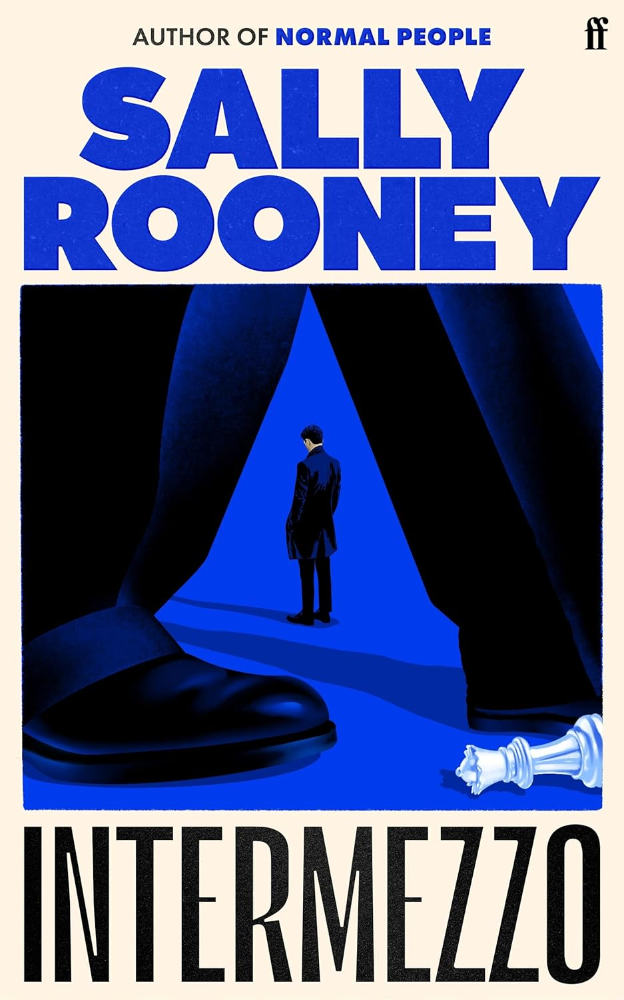

Book Title
About the author: Sally Rooney is the author of the novels Conversations with Friends, Normal People and Beautiful World, Where Are You. She was the winner of the Sunday Times/PFD Young Writer of the Year Award in 2017. Normal People ('the literary phenomenon of the decade', Guardian) was the Waterstones Book of the Year 2019, won the Costa Novel of the Year 2018 and the Royal Society of Literature's Encore Award 2019. Sally Rooney co-wrote the television adaptation of Normal People which was broadcast on the BBC in 2020.
Review: Literary success is filled with first time wonders, say an outstanding novel, followed by never-quite-as-good second, third or more works.
Sally Rooney’s first two novels shattered this premise as they were both excellent. The third, alas, was not. Then comes this one, Intermezzo, and I picked it up with a bit of scepticism as promotional great reviews usually accompany the new releases of already established bestseller authors. Well, not only is this book on par with her first two, but it also reaches new heights as Rooney revisits already familiar elements of the lives of Irish millennials through a fascinating host of characters. This time she adds a more experimental prose to her already powerful arsenal of describing and narrating tools, resulting in a vivid, engaging, and compelling book. As the cliché goes, it is hard to put this one down.
Rating: ★★★★☆ (4/5)
Click here to view the book 